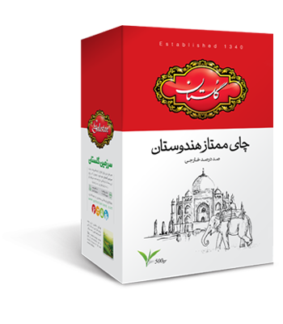
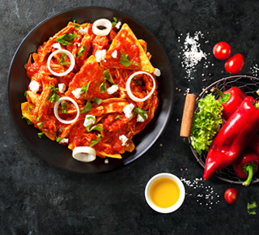

سرمایه انسانی

مراكز فروش

محصولات گلستان

مشتریان گلستان

سرمایه انسانی
مراكز فروش
محصولات گلستان
مشتریان گلستان
برنج گلستان
معرفی محصول

مرغوبترین برنج دنیا، برنج ایران است و بهترین نوع برنج ایرانی، طارم و هاشمی. این برنجها از بهترین شالیزارهای مازندران برداشت شده، پس از كنترل كیفیت در آزمایشگاههای تخصصی گلستان وارد چرخه بستهبندی و در وزنهای مختلف به بازار عرضه میشوند. عطر و طعم بینظیر برنج گلستان با هیچ برنج دیگری قابل مقایسه نیست. با گلستان، كیفیت زندگی بالاتر از همیشه است چرا كه مشتریان گلستان؛ لایق بهترینها هستند.
چای گلستان
معرفی محصول

چای تنها یك نوشیدنی گرم نیست. یک گفتمان است؛ گرمابخش وجود و بهانهای برای آغاز یك معاشرت دلچسب. بیدلیل نیست كه نام «محبوبترین نوشیدنی دنیا» را با خود یدک میكشد. نوشیدنش خستگیها را فراری داده، حس خوب آرامش را به همراه دارد.
پسته گلستان
معرفی محصول

خواص فوقالعاده پسته بر كسی پوشیده نیست. پسته را منبع ویتامین و مواد معدنی مینامند، یك پمپ خونساز قوی و تسكین دهنده قلب و اعصاب.

ابتدا ماکارانی را در ظرفی به همراه آب، روغن مایع و نمک میریزیم تا کمی بپزد در این حین پیازها را خرد کرده روی روغن تفت میدهیم تا طلایی شود

گوشت بوقلمون را در یک ماهیتابه بزرگ ریخته، آب روی آن بریزید تا روی آن را بپوشاند و به مدت نیم ساعت آن را بپزید. گوشت را از مایع بیرون آورده

احتمالا نام چیلا کیله را نشنیده باشید ولی اگر یکبار این غذای فوقالعاده خوشمزه را تهیه کنید و نوش جان کنید جزئی جدانشدنی از فهرست حتمالا نام
نودل هاتی کارا یك میانوعدهی مغذی، در هر موقعیتی كه باشید با كمی آب جوش و یك نودل هاتیكارا میتوانید از یك غذای سالم و خوشمزه لذت ببرید.
نودلهای هاتی كارا را میتوان جایگزین سالمی برای غذاهای فستفودی دانست. طعم عالی، ارزش غذایی بالا از این محصول غذای سالم.

كسبوكارها اجزای قدرتمند جامعه به شمار میآیند و موفقترین، قابلاحترامترین و مطلوبترین كسبوكارها آنهایی هستند كه كاری فراتر از درآمدزایی ایجاد كنند؛ آنهایی كه آمدهاند تا از تجربه و امکاناتشان برای حل مشكلات جامعه و محیط زندگی خود استفاده كنند. گلستان در فعالیتهای اجتماعی خود، گسترده وسیعی از فعالیتهای عامالمنفعه را در دستوركار خود قرار داده است.

.svg)
.svg)